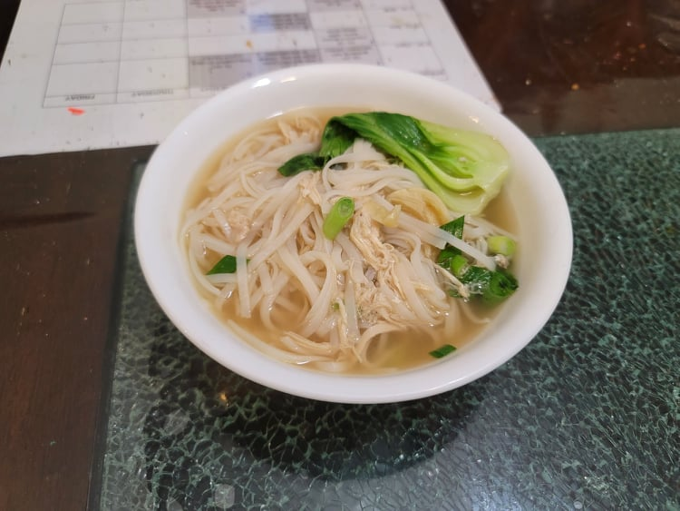

Chinese Noodle Soup

Ingredients:
Broth:
- 6 cups Low sodium Chicken stock/broth
- 4 cloves Garlic, smashed
- 1 inch Ginger, thinly sliced
- 3 tbsp Light soy sauce
- 3 tbsp Shaoxing wine
- 4 tsp Sugar
- 1 tsp Sesame oil
Noodles and Toppings:
Instructions:
- Combine the broth ingredients into a large pot. Bring to a boil and then reduce to a simmer. Let simmer, covered, for 10 minutes.
- While the broth cooks, cook the dried noodles according to package instructions.
- Add in the bok choy to the broth to cook for 1 minute. You can optionally remove the ginger and garlic from the pot.
- Add in the noodles and chicken. Mix and let it return to a simmer. Then remove from heat and add in the scallions. Serve hot.